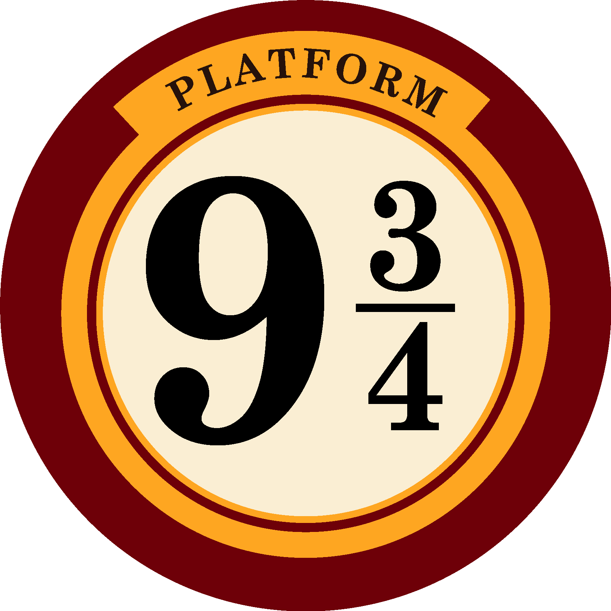

📘 Concepto:
Con and, or y not podemos combinar condiciones. Esto nos permite escribir decisiones más complejas y precisas.
🧠 Desafío:
Escribí la función acceso_anden(tiene_varita, boleto_magico, es_mago) que devuelva:
"¡Acceso concedido al Andén 9¾!"si todas las condiciones son verdaderas"No puedes cruzar al mundo mágico."en cualquier otro caso